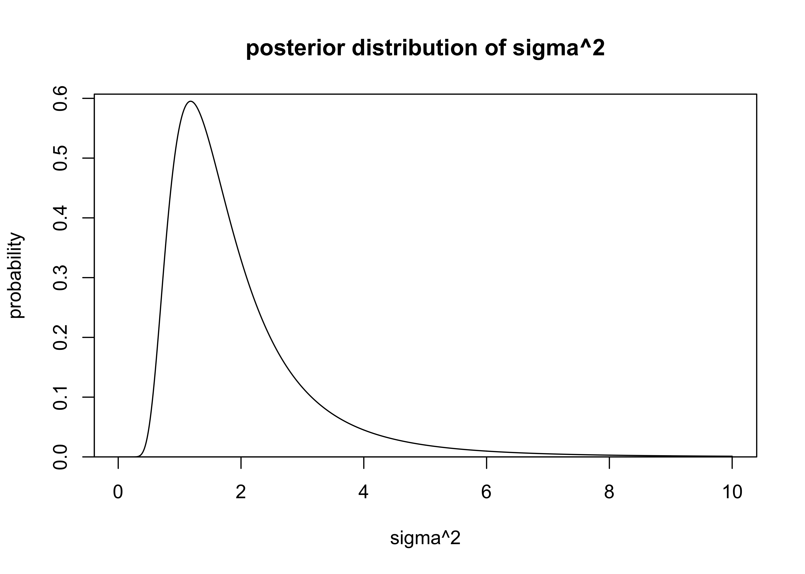
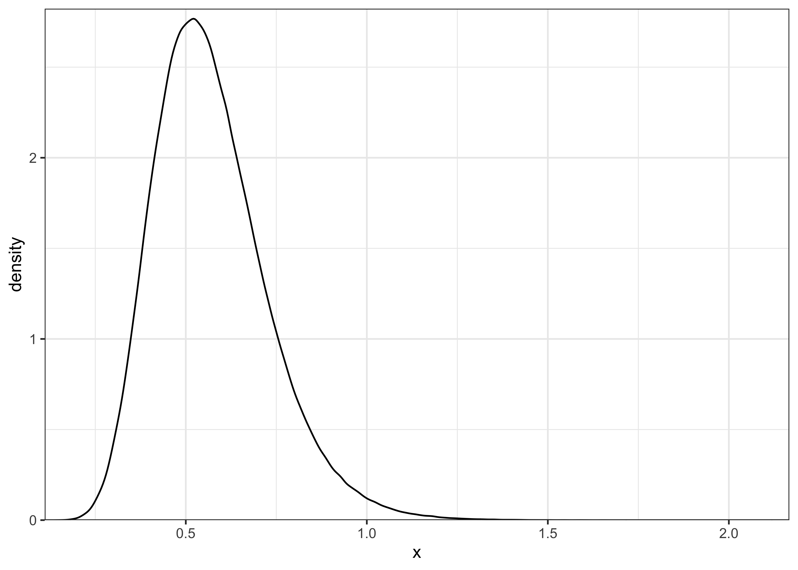

23 Assignment 3
2021-09-07
23.1 Setup
library(glue)
library(tidyverse)#> ── Attaching packages ─────────────────────────────────────────────────────────────────────────── tidyverse 1.3.1 ──#> ✔ ggplot2 3.3.5 ✔ purrr 0.3.4
#> ✔ tibble 3.1.3 ✔ dplyr 1.0.7
#> ✔ tidyr 1.1.3 ✔ stringr 1.4.0
#> ✔ readr 2.0.1 ✔ forcats 0.5.1#> ── Conflicts ────────────────────────────────────────────────────────────────────────────── tidyverse_conflicts() ──
#> ✖ dplyr::collapse() masks glue::collapse()
#> ✖ dplyr::filter() masks stats::filter()
#> ✖ dplyr::lag() masks stats::lag()theme_set(theme_bw() + theme(plot.title = element_text(hjust = 0.5)))
set.seed(748)23.2 Exercise 1. Inference for normal mean and deviation
A factory produces car windshields and we have sample of data from testing their hardness. Assume the observations follow a normal distribution with unknown standard deviation. Also use an uninformative prior \(p(\mu, \sigma) \propto \sigma^{-1}\).
windshieldy <- read_data("windshieldy1.txt")
windshieldy <- as.numeric(windshieldy)
windshieldy_test <- c(13.357, 14.928, 14.896, 14.820)a) What can you say about the unknown \(\mu\)? Summarize your results using Bayesian point estimate (i.e. \(E(\mu|y)\)), a posterior interval (95%), and plot the density.
The point estimate and 95% CI for \(\mu\) can be calculated using the \(t\)-distribution and scaling the result according to the following equation for BDA3 (pg. 66):
\[ \frac{\mu - \bar{y}}{s / \sqrt{n}} | y \sim t_{n-1} \] where
\[ s = \frac{1}{n-1} \Sigma(y - \bar{y})^2 \]
and \(n\) is the total number of data points.
calc_s_statistic <- function(a) {
s_sqr <- (1 / (length(a) - 1)) * sum((a - mean(a))^2)
return(sqrt(s_sqr))
}
mu_point_est <- function(data, q = 0.5) {
y <- data
n <- length(y)
y_bar <- mean(y)
s <- calc_s_statistic(y)
t_prob <- qt(q, df = n - 1)
return(t_prob * s / sqrt(n) + y_bar)
}
stopifnot(close_to(mu_point_est(data = windshieldy_test), 14.5))
mu_point_est(data = windshieldy)#> [1] 14.61122mu_interval <- function(data, prob = 0.95) {
lower_q <- (1 - prob) / 2.0
upper_q <- 1 - lower_q
return(c(mu_point_est(data, lower_q), mu_point_est(data, upper_q)))
}
stopifnot(all(close_to(
mu_interval(data = windshieldy_test, prob = 0.95),
c(13.3, 15.7),
epsilon = 0.1
)))
mu_interval(data = windshieldy)#> [1] 13.47808 15.74436The probability density function of \(\mu\) can be estimated using the same equations. The PDF is plotted below.
mu_density <- function(mu, data) {
y <- data
n <- length(y)
y_bar <- mean(y)
s <- calc_s_statistic(y)
mu_trans <- (mu - y_bar) / (s / sqrt(n))
d <- dt(mu_trans, df = n - 1)
return(d)
}
mus <- seq(11.5, 17.5, 0.01)
mu_dens <- purrr::map_dbl(mus, ~ mu_density(.x, windshieldy))
plot_dist(
mus,
mu_dens,
xlab = "mu",
ylab = "probability",
main = "posterior distribution of mu"
)
The PDF for \(\sigma\) can be calculated analytically from equation 3.5 in BDA (pg. 65).
\[
\sigma^2 | y \sim \text{Inv-}\chi^2(n-1, s^2)
\]
where \(n\) and \(s\) have the same description as above.
The \(\text{Inv-}\chi^2(\nu, s^2)\) distribution is the scaled inverse chi-squared distribution parameterized by the degrees of freedom \(\nu\) and scale \(s\) (BDA3, Appendix A, pg. 578).
I used the function dinvchisq() from the package ‘LaplacesDemon’ to calculate the probabilities of values of \(\sigma^2\).
The PDF for \(sigma^2\) is plotted below.
sigma_probability <- function(x, data) {
nu <- length(data) - 1
s <- calc_s_statistic(data)
d <- LaplacesDemon::dinvchisq(x = x, df = nu, scale = s)
return(d)
}
sigmas <- seq(0, 10.0, 0.01)
sigmas <- sigmas[2:length(sigmas)]
sigma_dens <- purrr::map_dbl(sigmas, ~ sigma_probability(.x, windshieldy))
plot_dist(
sigmas,
sigma_dens,
xlab = "sigma^2",
ylab = "probability",
main = "posterior distribution of sigma^2"
)
b) What can you say about the hardness of the next windshield coming from the production line before actually measuring the hardness? Summarize your results using Bayesian point estimate, a predictive interval (95%), and plot the density.
Random values of \(\mu\) can be sampled from the \(t\)-distribution (and transformed as explained above) and samples for \(\sigma^2\) can be sampled from the \(\text{Inv-}\chi^2\) distribution. Another option for sampling \(\sigma^2\) is to first sample values \(X\) from the \(\chi_\nu^2\) distribution and transform them by \(\nu s^2 / X\) (BDA3, Appendix A, pg. 583).
The posterior predictive sampling procedure was to sample 1,000 random values for \(\mu\) and \(\sigma\) then sample a random value from a normal distribution described with each pair of the random values.
random_mu <- function(n, data) {
y <- data
nu <- length(y)
y_bar <- mean(y)
s <- calc_s_statistic(y)
r <- rt(n, df = nu)
return(r * s / sqrt(nu) + y_bar)
}
scaled_rinvchiq <- function(n, data) {
nu <- length(data) - 1
s <- calc_s_statistic(data)
theta <- LaplacesDemon::rinvchisq(n = n, df = nu, scale = s)
return(theta)
}
n <- 1e4
r_sigmas_sqrd <- scaled_rinvchiq(n, data = windshieldy)
r_mus <- random_mu(n, data = windshieldy)
y_tildes <- rnorm(n, mean = r_mus, sd = sqrt(r_sigmas_sqrd))The plot below shows 100 of the randomly created normal distributions form the sampled values of \(\mu\) and \(\sigma\).
get_densities_over_x <- function(mu, sigma, a = 10, b = 20, stepsize = 0.1) {
x <- seq(a, b, stepsize)
y <- dnorm(x, mean = mu, sd = sigma)
return(tibble(x, y))
}
plot_n <- 100
tibble(
sigma = head(sqrt(r_sigmas_sqrd), n = plot_n),
mu = head(r_mus, n = plot_n)
) %>%
mutate(
grp = glue("mu = {round(mu, 2)}, sigma = {round(sigma, 2)}"),
dist_data = purrr::map2(mu, sigma, get_densities_over_x)
) %>%
unnest(dist_data) %>%
ggplot(aes(x = x, y = y)) +
geom_line(aes(group = grp), alpha = 0.25) +
scale_x_continuous(expand = c(0, 0)) +
scale_y_continuous(expand = expansion(mult = c(0, 0.02))) +
labs(
x = "windshield hardness",
y = "probability",
title = "Posterior distributions for the hardness of windshield"
)
The density of the posterior samples for \(\mu\) and \(\sigma\) is shown in the plot below.
post_pred_df <- tibble(
mu = r_mus, sigma = sqrt(r_sigmas_sqrd), y_tilde = y_tildes
)
post_pred_df %>%
ggplot(aes(x = mu, y = sigma)) +
geom_point(alpha = 0.5, size = 0.2) +
geom_density2d() +
scale_x_continuous(expand = expansion(mult = c(0.02, 0.02))) +
scale_y_continuous(expand = expansion(mult = c(0.02, 0.02))) +
labs(title = "Posterior samples for distribution parameters")
Finally, the following is the posterior predictive distribution.
post_pred_df %>%
add_column(grp = "y_tilde") %>%
bind_rows(tibble(y_tilde = windshieldy, grp = "y")) %>%
ggplot(aes(x = y_tilde)) +
geom_rug(aes(x = y), data = tibble(y = windshieldy)) +
geom_density(aes(color = grp)) +
scale_x_continuous(expand = c(0, 0)) +
scale_y_continuous(expand = expansion(mult = c(0, 0.02))) +
scale_color_brewer(type = "qual", palette = "Set1") +
labs(
x = "windshield hardness",
y = "density",
color = NULL,
title = "Posterior predicitive distribution"
)Using the functions created above, I can address the specific tests provided with the question. It would be better to provide an analytic solution by integrating over the probability densities of \(\sigma\) and \(\mu\), but these sampling-based solutions are pretty close.
post_pred_sample <- function(data, n) {
mu <- random_mu(n, data = data)
sigma <- sqrt(scaled_rinvchiq(n, data = data))
purrr::map2_dbl(mu, sigma, ~ rnorm(1, mean = .x, sd = .y))
}
mu_pred_point_est <- function(data, n = 1e6, iters = 5) {
lapply(
seq(1, iters),
function(x) {
mean(post_pred_sample(data = data, n = n))
}
) %>%
unlist() %>%
mean()
}
mu_pred_interval <- function(data, prob, n = 1e7) {
lower_q <- (1.0 - prob) / 2.0
upper_q <- 1.0 - lower_q
post_pred_samples <- post_pred_sample(data = data, n = n)
quantile(post_pred_samples, c(lower_q, upper_q))
}
stopifnot(close_to(
mu_pred_point_est(data = windshieldy_test), 14.5,
epsilon = 0.1
))
stopifnot(all(close_to(
mu_pred_interval(data = windshieldy_test, prob = 0.95),
c(11.8, 17.2),
epsilon = 0.5
)))mu_pred_point_est(data = windshieldy)#> [1] 14.61259mu_pred_interval(data = windshieldy, prob = 0.95)#> 2.5% 97.5%
#> 11.61276 17.6114023.3 Exercise 2. Inference for the difference between proportions
An experiment was performed to estimate the effect of beta-blockers on mortality of cardiac patients. A group of patients was randomly assigned to treatment and control groups: out of 674 patients receiving the control, 39 died, and out of 680 receiving the treatment, 22 died. Assume that the outcomes are independent and binomially distributed, with probabilities of death of \(p_0\) and \(p_1\) under the control and treatment, respectively. Set up a non-informative or weakly informative prior distribution on \((p_0,p_1)\).
a) Summarize the posterior distribution for the odds ratio, \(\frac{p_1 / (1-p_1)}{p_0 / (1-p_0)}\). Compute the point estimate, a posterior interval (95%), and plot the histogram.
priors: \(p_0, p_1 \sim \text{Beta}(2, 5)\)
x <- seq(0, 1, 0.01)
p <- dbeta(x, 2, 5)
plot_dist(
x = x,
y = p,
xlab = "proportion",
ylab = "probability",
main = "Prior distribution for p0, p1 ~ Beta(2, 5)"
)likelihoods:
- \(y_0|p_0, n_0 \sim \text{Binomial}(p_0, n_0)\)
- \(y_1|p_1, n_1 \sim \text{Binomial}(p_1, n_1)\)
posteriors:
- \(p_0|y_0, n_0 \sim \text{Beta}(y_0 + 2, n_0 - y_0 + 5)\)
- \(p_1|y_1, n_1 \sim \text{Beta}(y_1 + 2, n_1 - y_1 + 5)\)
# Calculate the odds ratio given two values or vectors.
posterior_odds_ratio <- function(p0, p1) {
or <- (p1 / (1 - p1)) / (p0 / (1 - p0))
return(or)
}# Calculate a point estimate (mean) for the OR.
posterior_odds_ratio_point_est <- function(p0, p1) {
return(mean(posterior_odds_ratio(p0, p1)))
}# Find probability intervals for the posterior OR.
posterior_odds_ratio_interval <- function(p0, p1, prob = 0.95) {
lower_q <- (1.0 - prob) / 2.0
upper_q <- 1.0 - lower_q
or <- posterior_odds_ratio(p0, p1)
return(quantile(or, c(lower_q, upper_q)))
}I can check my calculations and implementation using the test data provided with the exercise.
# test data
set.seed(4711)
p0 <- rbeta(100000, 5, 95)
p1 <- rbeta(100000, 10, 90)
stopifnot(close_to(
posterior_odds_ratio_point_est(p0 = p0, p1 = p1), 2.676,
epsilon = 0.01
))
stopifnot(all(close_to(
posterior_odds_ratio_interval(p0 = p0, p1 = p1, prob = 0.9),
c(0.875, 6.059),
epsilon = 0.01
)))Finally, I can address the question using the following values: \(n_0= 674\), \(y_0 = 39\), \(n_1=680\), and \(y_1 = 22\). I used a weakly informative prior \(\text{Beta}(2, 5)\) I first drew samples from the posteriors for \(p_0\) and \(p_1\) then used those to calculate the posterior for the odds ratio.
n0 <- 674
y0 <- 39
n1 <- 680
y1 <- 22
prior_a <- 2
prior_b <- 5
sample_posterior_p <- function(prior_a, prior_b, y, n, draws = 1e6) {
a <- prior_a + y
b <- prior_b + n - y
return(rbeta(draws, a, b))
}
p0_post <- sample_posterior_p(prior_a, prior_b, y = y0, n = n0)
p1_post <- sample_posterior_p(prior_a, prior_b, y = y1, n = n1)
post_or <- posterior_odds_ratio(p0_post, p1_post)The posterior distributions of \(p_0\) and \(p_1\) are shown below. From this plot, it appears that \(p_1\) is likely lower than \(p_0\) and we should expect an \(OR < 1\).
plot_two_distributions(p0_post, "p0", p1_post, "p1") +
labs(
x = "parameter value",
y = "density",
color = "parameter",
fill = "parameter"
)The posterior distribution for the odds ratio is plotted below and it is shifted primarily to values less than 1.
plot_single_distribution(post_or) +
labs(x = "odds ratio", y = "density")
b) Discuss the sensitivity of your inference to your choice of prior density with a couple of sentences.
# Non-informative priors
prior_a <- 1
prior_b <- 1
sample_posterior_p <- function(prior_a, prior_b, y, n, draws = 1e6) {
a <- prior_a + y
b <- prior_b + n - y
return(rbeta(draws, a, b))
}
p0_post_noinfo <- sample_posterior_p(prior_a, prior_b, y = y0, n = n0)
p1_post_noinfo <- sample_posterior_p(prior_a, prior_b, y = y1, n = n1)
post_or_noinfo <- posterior_odds_ratio(p0_post_noinfo, p1_post_noinfo)
plot_single_distribution(post_or_noinfo)plot_two_distributions(post_or, "weakly info.", post_or_noinfo, "non-info.") +
labs(x = "odds ratio", y = "density", color = "prior", fill = "prior")The difference in influence on the posterior inference between a weakly informative prior \(\text{Beta}(2, 5)\) and non-informative, uniform prior \(\text{Beta}(1, 1)\) is negligible. The large number of data points overwhelms the prior’s influence.
This can be tested by experimenting with a very strong prior \(\text{Beta}(1000, 5)\), as shown below.
# Strong priors
prior_a <- 1000
prior_b <- 5
sample_posterior_p <- function(prior_a, prior_b, y, n, draws = 1e6) {
a <- prior_a + y
b <- prior_b + n - y
return(rbeta(draws, a, b))
}
p0_post_strong <- sample_posterior_p(prior_a, prior_b, y = y0, n = n0)
p1_post_strong <- sample_posterior_p(prior_a, prior_b, y = y1, n = n1)
post_or_strong <- posterior_odds_ratio(p0_post_strong, p1_post_strong)
plot_two_distributions(post_or, "weakly info.", post_or_strong, "strong") +
labs(x = "odds ratio", y = "density", color = "prior", fill = "prior")
23.4 Exercise 3. Inference for the difference between normal means
Consider a case where the same factory has two production lines for manufacturing car windshields. Independent samples from the two production lines were tested for hardness. We assume that the samples have unknown standard deviations \(\sigma_1\) and \(\sigma_2\). Use uninformative or weakly informative priors.
windshieldy1 <- read_data("windshieldy1.txt") %>% as.numeric()
windshieldy2 <- read_data("windshieldy2.txt") %>% as.numeric()a) What can you say about \(\mu_d = \mu_1 - \mu_2\)?
I calculated \(\mu_1\) and \(\mu_2\) as in Exercise 1. The posterior distributions for these parameters is plotted below along with the actual observed values along the x-axis.
mus <- seq(11.5, 17.5, 0.01)
mu1_dens <- purrr::map_dbl(mus, ~ mu_density(.x, windshieldy1))
mu2_dens <- purrr::map_dbl(mus, ~ mu_density(.x, windshieldy2))data_tibble <- tibble(
prod_line = c(rep("1", length(windshieldy1)), rep("2", length(windshieldy2))),
y = c(windshieldy1, windshieldy2)
)
tibble(
mu = c(mus, mus),
prob = c(mu1_dens, mu2_dens),
prod_line = c(rep("1", length(mu1_dens)), rep("2", length(mu2_dens)))
) %>%
ggplot() +
geom_line(aes(x = mu, y = prob, color = prod_line)) +
geom_rug(aes(x = y, color = prod_line), data = data_tibble, size = 1.2) +
scale_x_continuous(expand = c(0, 0)) +
scale_y_continuous(expand = expansion(mult = c(0, 0.02))) +
labs(x = "windshield hardness", y = "probability", color = "production line")As before, I can sample from the posteriors of \(\mu_1\) and \(\mu_2\) and use these simulated values for further calculations, in this case \(\mu_d = \mu_1 - \mu_2\). The distribution for \(\mu_d\) is plotted below.
n <- 1e6
mu1_draws <- random_mu(n, data = windshieldy1)
mu2_draws <- random_mu(n, data = windshieldy2)
mud_draws <- mu1_draws - mu2_draws
plot_single_distribution(mud_draws) +
theme(axis.title.x = ggtext::element_markdown()) +
labs(x = "µ<sub>d</sub>", y = "probability density")
Using the simulated posterior, I can get an estimate for the expected value of \(\mu_d\) as the mean of the posterior distribution.
glue(
"point estimate for µ_d as mean of posterior = {round(mean(mud_draws), 3)}"
)#> point estimate for µ_d as mean of posterior = -1.21I can also use the simulated values to get 95% CI of the posterior.
mud_95ci <- round(quantile(mud_draws, c(0.025, 0.975)), 3)
glue("95% CI of posterior for µ_d: {mud_95ci[[1]]}, {mud_95ci[[2]]}")#> 95% CI of posterior for µ_d: -2.432, 0.012Lastly, I can calculate the probability that \(\mu_1\) is less than \(\mu_2\), i.e. \(\mu_d < 0\).
prob_mud_neg <- mean(mud_draws < 0)
glue("Pr(µ_1 < µ_2) = {round(prob_mud_neg, 3)}")#> Pr(µ_1 < µ_2) = 0.974b) Given the model used, what is the probability that the means are exactly the same (\(\mu_1 = \mu_2\))? Explain your reasoning.
The probability that \(\mu_1 = \mu_2\) is technically 0 because we cannot compute the probability of individual values. Instead, we can define a region of practical equivalence (ROPE) that represents a range of values where we would say the values are effectively the same. Ideally, we would ask someone with domain expertise to devise a region based on the real-world meaning of the values, but, in this example with windshield hardness, that is not possible. Thus, I will define the ROPE to be 1% of the standard deviation of the observed hardness measurements: \(0.01 \times \sigma(y_1, y_2)\).
rope <- sd(c(windshieldy1, windshieldy2)) * 0.01
rope#> [1] 0.01278151prob_rope <- mean((mud_draws > -rope) & (mud_draws < rope))
glue("probability that µ_d is within the ROPE: {round(prob_rope, 3)}")#> probability that µ_d is within the ROPE: 0.002